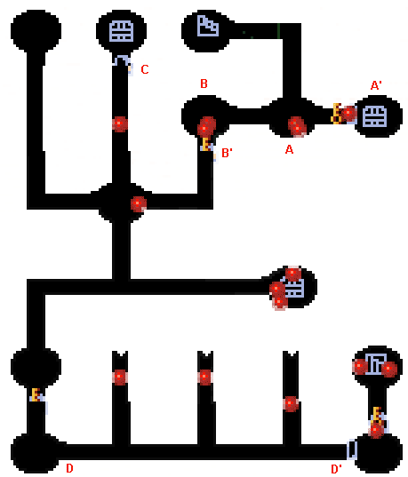
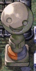
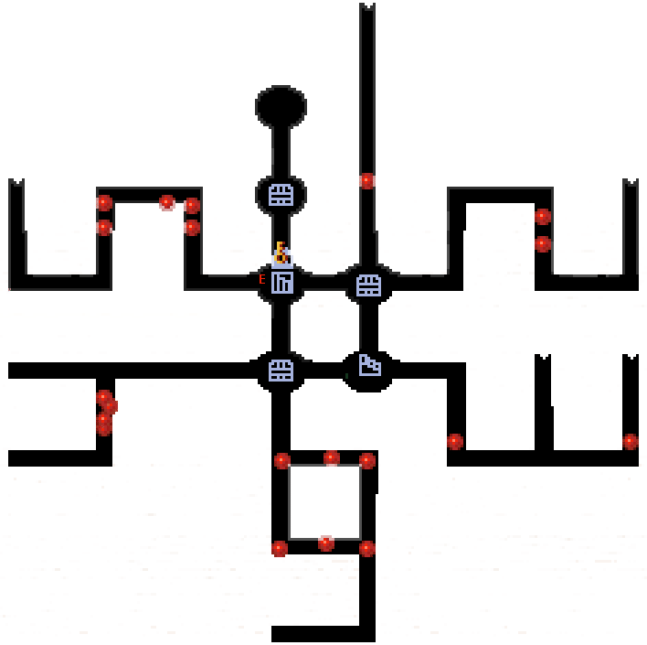

| 概要 | 情報 | アイテム一覧 |
| 敵キャラ一覧 | ステージ一覧 | 夢幻迷宮について |
| 攻略チャート | Zwei!! 攻略へ |
| ステージ選択 |
パーヴェル庭園 Lv.11
|  | |
| A | A地点には大砲を持ったこぼるとがいます。 こぼるとを倒すと、A'地点の扉が開きます。 |
| B | B地点には大砲を持ったこぼるとがいます。 同じ部屋のツボの中に爆弾があるので、それで倒しましょう。 また、倒すとB'地点の扉が開きます。 |
| C  |
C地点のこの像は、磁石で動かします。 |
| D | D、D'間にはトゲが移動しています。ぶつからないようにしましょう。 また、D'地点には磁石でしか動かせない像があります。 タイミングよく動かし、素早く次の部屋へ移動しましょう。 |
|  | |
E |
E地点の扉を開けるには、マップ上にあるボタンスイッチを順番通りONにする必要があります。 ボタンスイッチの近くにあるツボの数が少ない順に押していきましょう。(1から) |
| ステージ選択へ |
| 概要 | 情報 | アイテム一覧 |
| 敵キャラ一覧 | ステージ一覧 | 夢幻迷宮について |
| 攻略チャート | Zwei!! 攻略へ |
Zwei!!
| 目次へ戻る | ページの上部へ |